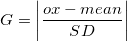

der Wert des vermuteten Punkts (normalerweise höchste und niedrigste Beobachtung), der Mittelwert des Datensatzes und die Standardabweichung ist.
der Wert des vermuteten Punkts (normalerweise höchste und niedrigste Beobachtung), der Mittelwert des Datensatzes und die Standardabweichung ist.Inhalt |
Um den Dialog des Grubbs-Test über das Menü zu öffnen:
Siehe auch:
| Ausgabe Ergebnisprotokoll |
Legen Sie die Ergebnisse fest, die im Ergebnisfenster ausgegeben werden. |
|---|---|
| Neu berechnen |
Bedienelemente zur Neuberechnung der Analyseergebnisse:
Weitere Informationen finden Sie unter Analyseergebnisse neu berechnen. |
| Eingabe |
Muss eine Spalte oder ein Spaltenbereich sein. Hilfe zum Festlegen von Bereichen finden Sie hier: Eingabedaten festlegen |
| Signifikanzniveau |
Optionsliste
|
| Ausreißerdiagramm |
Bei Aktivierung dieses Kontrollkästchens wird ein Ausreißerdiagramm erzeugt. Streudiagramm mit oberen und unteren Konfidenzgrenzen und Datensatzmittelwerte als Liniendiagramme |
| Daten für Grubbs-Diagramm |
Arbeitsblattbereich zur Ausgabe der Daten für das Ausreißerdiagramm (verfügbar, wenn Ausreißerdiagramm aktiviert ist). Ergebnisblatt führt oberen und untere Konfidenzwerte auf. Hilfe zum Festlegen der Bereiche finden Sie unter: Ergebnisse ausgeben |
| Grubbs-Bericht |
Der Arbeitsblattbereich für die Ausgabe der Berichtstabelle |
1. Berechnumg der Statistik des Grubbs-Test :

wobei der Wert des vermuteten Punkts (normalerweise höchste und niedrigste Beobachtung), der Mittelwert des Datensatzes und die Standardabweichung ist.
wird mit dem kritischen Wert verglichen.
2. Berechnung des p-Werts:
Z^{2}}{\left ( N-1 \right )^2-NZ^2}}")
wobei das größte und  die Anzahl der Stichproben ist.
die Anzahl der Stichproben ist.
Der p-Wert wird dann als beidseitiger p-Wert für die studentisierte t-Verteilung des  -Werts berechnet.
-Werts berechnet.
Die fehlenden Werte in dem Datenbereich werden aus der Analyse ausgeschlossen.
Stephen L R. Ellison, Vicki J. Barwick and Trevor J Duguid. Farrant. 2009. Practical Statistics for the Analytical Scientist. The Royal Society of Chemistry, Cambridge, UK.